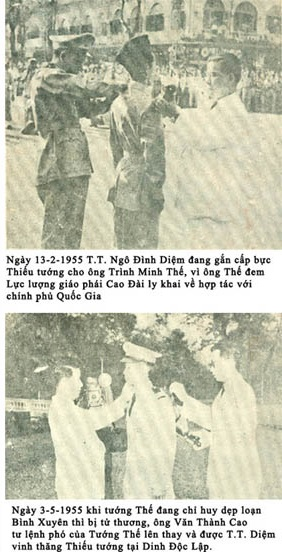
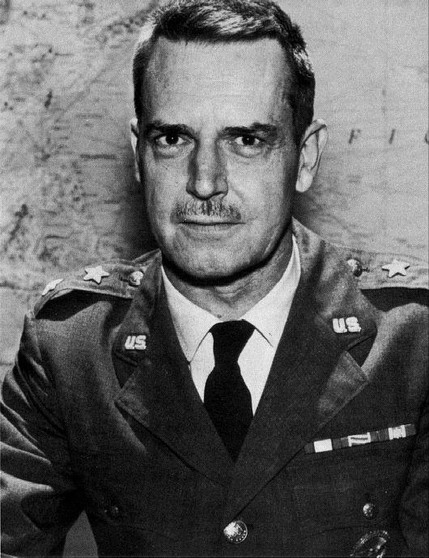

Chú thích ảnh bìa trước:
Ngày 6-1-1955, Thủ tướng Ngô Đình Diệm vinh thăng Thiếu tướng cho Đại tá Dương Văn Minh, tư lệnh chiến dịch Hoàng Diệu dẹp loạn Bình Xuyên. Nhưng có ai ngờ 8 năm sau, ngày 1-11-1963, Tướng Minh đã cầm đầu cuộc đảo chính để lật đổ chế độ của Tổng Thống Diệm và kết quả Ông Diệm và Ông Nhu bị sát hại

.Trong mấy năm gần đây, người ta đã khai thác khá nhiều những đề tài hấp dẫn về Việt Nam. Dư luận thế giới chăm chú theo dõi tình hình Việt Nam, đã được đọc nhiều tài liệu, nhiều hồi ký do những nhân vật quan trọng có liên hệ mật thiết với các vấn đề chính trị, quân sự quốc tế viết ra. Lâu lâu lại có thêm những chi tiết rất ly kỳ, gọi là bí mật về cuộc chiến tranh Việt Nam được tiết lộ.
Gần đây nhà xuất bản Harper & Row tại Hoa Kỳ vừa cho ấn hành một cuốn sách nhan đề IN THE MIDST OF WARS của Edward Geary Lansdale, Trung tướng Không Lực Mỹ hồi hưu. Sách này là hồi ký của Lansdale ghi lại một số sự việc xảy ra tại Phi Luật Tân và Việt Nam từ năm 1950 đến 1956 vào lúc Lansdale sang hai nơi này phục vụ trong Phái bộ Mỹ.

.Lansdale sinh năm 1908 tại tiểu bang Detroit. Ông tốt nghiệp đại học đường California tại Los Angeles, từng làm việc trong ngành quảng cáo và trong cơ quan O.S.S. của Mỹ hồi Thế Chiến thứ II. Sau khi chiến tranh thế giới chấm dứt ông phục vụ trong Không Lực Hoa Kỳ. Năm 1950 ông được cử sang Phi Luật Tân. Tại đây ông đã giúp đỡ chính quyền Phi Luật Tân rất nhiều trong công cuộc tiểu trừ quân Cộng Sản Huk. Năm 1954, bộ Ngoại Giao Mỹ đã xin cử ông sang Việt Nam làm việc cho đến hết năm 1956. Ông là người rất thân cận với các vị cố Tổng Thống Magsaysay và Ngô Đình Diệm, gần như một “quân sư”, đã thực sự cố vấn cho hai vị Tổng Thống quá cố này nhiều vấn đề quan trọng về quân sự, chính trị…
Năm 1963, Lansdale về hưu vối cấp bậc Trung Tướng. Sau đó ông lại tình nguyện sang phục vụ tại Việt Nam với chức vụ phụ tá Đại Sứ từ 1965 đến 1968. Ông được báo chí quốc tế biết đến khá nhiều nhờ vai trò ly kỳ của ông sau hậu trường chính trị Phi Luật Tân và Việt Nam trong thập niên 50. Cuốn hồi ký của Lansdale gồm hai phần chính: thời kỳ ông ở Phi Luật Tân và thời kỳ ở Việt Nam lần thứ nhất.
Nhận thấy cuốn sách có một giá trị lịch sử nào đó, chúng tôi đã lược dịch phần liên quan đến Việt Nam trong Đệ Nhất Cộng Hòa để cống hiến độc giả thêm chút ít dữ kiện hiểu biết. Trong phần này, một số chi tiết không quan trọng đã được lược bỏ để phù hợp với kỹ thuật ấn loát và xuất bản.
Lansdale là một người Mỹ có quan niệm rất khác biệt về Á Châu so với đa số những người Mỹ khác. Ông chủ trương người Mỹ nên có một thái độ thân hữu đúng mức với nhân dân châu Á. Vì vậy, hồi ký của ông đã được viết với căn bản quan niệm nói trên. Những nhận xét của ông có thể đúng hay sai ; một người Tây Phương không thể nhìn thấu đáo mọi khía cạnh sinh hoạt Á Đông. Vả lại, hồi ký của ông không thể nào có đầy đủ những chi tiết quan trọng khác đã tạo nên một phần lịch sử Việt Nam trong thập niên 50. Ông cũng không tránh khỏi chút ít chủ quan thí dụ như phần nói về những đặc tính không mấy tốt đẹp của người Pháp tại thuộc địa, trong khi những người Mỹ như ông chưa chắc đã tránh khỏi. Người dịch tài liệu này đã được thấy sĩ quan Mỹ dưới quyền Lansdale có lần cương quyết từ chối không cho đồng bào di cư đi trên tàu Pháp được vào ở trại tiếp cư Phú Thọ trong lều do Mỹ cất, chưa có người ở, mặc dù lúc ấy trời mưa gió dữ dội, chỉ vì một lý do: đồng bào không đi trên tàu Mỹ, mà tàu Mỹ thì í́t nhất một tuần lễ sau mới tới Saigon.
Tuy nhiên dầu sao thì những dữ kiện lịch sử lớn nhỏ trong cuốn sách của Lansdale cũng có ít nhiều giá trị. Chính vì vậy, chúng tôi đã xuất bản bản dịch này. Uớc mong rằng nếu quí độc giả không tìm thấy ở đây những điều bổ ích thì cũng tìm thấy ở đây một vài phút giải trí với những mẩu chuyện của một thời kỳ đã đi qua.
DICH GIẢ
L.T.
25-12-1972